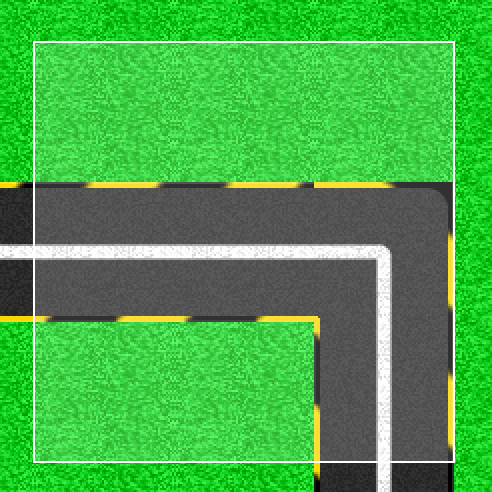

This tab allows you to create and modify tracks.
The Manage button allows you to edit an existing track or save a new one. A menu opens, offering four choices:
How can I edit an existing track without creating a new one afterward?
If you save the modified track in your personal list giving it its original name, the new version will simply replace the old one.
The selector at the top of the toolbar allows you to choose between a Tile mode and a Surface mode.
The former enables you to place the chosen tile wherever you click, or to paint with the tile if you drag it around.
The latter allows you to perform actions on all tiles in an area of the grid that you select. These actions are available at the bottom of the toolbar, only in this mode.

A selection in surface mode.
By clicking on the image of the selected tile, a drop-down menu appears and allows you to choose another one. The user can choose between four types of tiles: Straight Line, Turn, Start Line, and Grass.
The user can apply a rotation of 90° to the right or to the left to the chosen tile.
The buttons at the bottom of the toolbar appear in surface mode.
What happens if I copy an area of a certain size and then try to paste it into an area of a different size?
If the paste area is smaller than the copied area, only part of the original tiles will be pasted. In the opposite case, the paste will be done normally, ignoring the excess of the paste area.
The selected tile is placed where the user clicks. If you keep pressing and drag the cursor around, you can paint with the tile.
Hold the cursor and move it to select an area. You can then use the tools at your disposal to apply actions on the selected area. To deselect it, release the cursor and then perform a simple click on the grid.